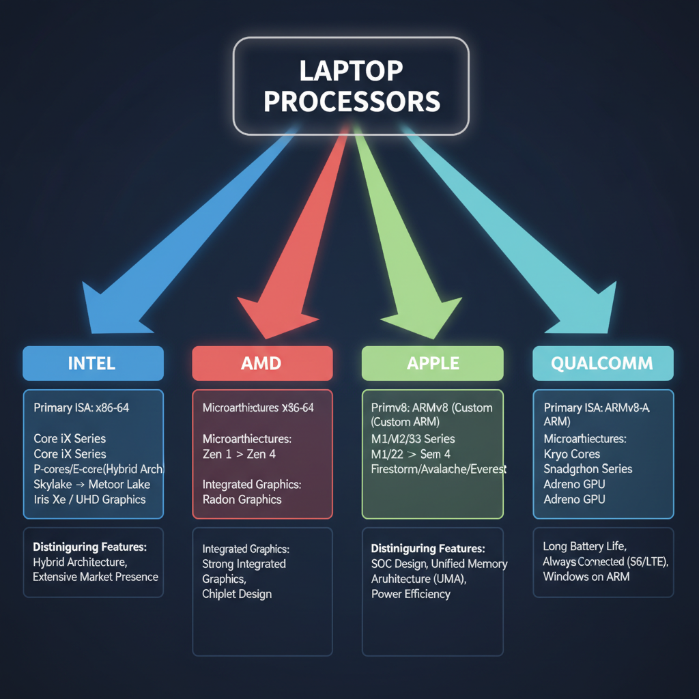
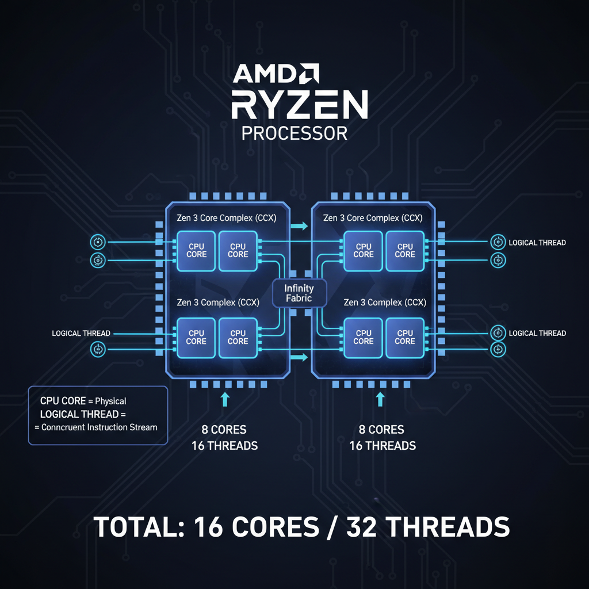
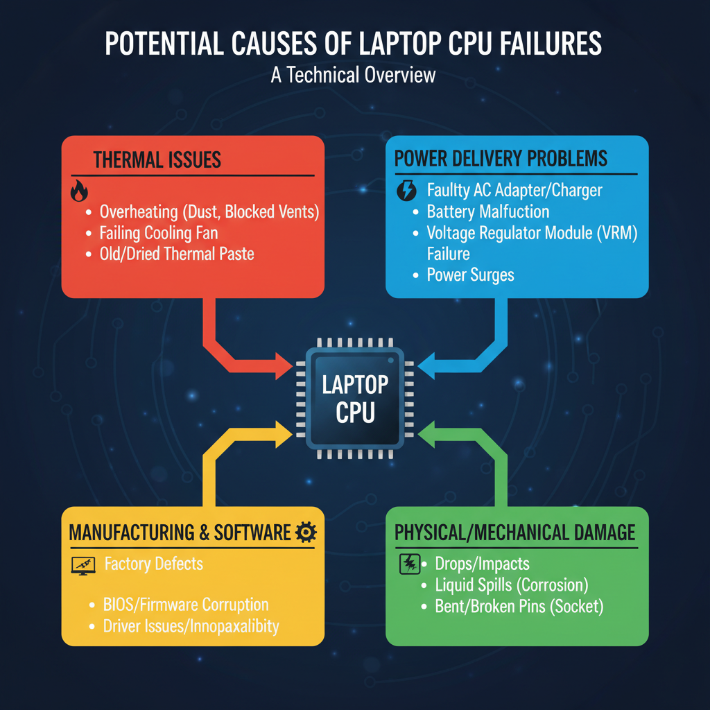

All Available Processors of Laptops
Overview of Laptop Processors

An overview of the different laptop processor types available.
Laptop processors are the brainchild of two prominent CPU manufacturers: Intel and AMD. Currently, these companies dominate the market with their respective offerings.
Top CPU Manufacturers for Laptop Processors
- Intel: Known for their Core series, Intel provides a wide range of processor options for laptops, from budget-friendly Atom to high-end Core i9.
- AMD: With their Ryzen series, AMD offers competitive alternatives to Intel's processors, including the popular Ryzen 5000 and 6000 series.
Types of Laptop Processors
Laptop processors can be broadly categorized into three types:
* Mobile Processors: Designed specifically for laptops, these processors are optimized for power efficiency, heat dissipation, and battery life.
* Desktop Processors: While not as common in laptops, some desktop processors like Intel's Core i7 and AMD's Ryzen 9 can also be found in high-end gaming laptops.
* Server Processors: These are the most powerful processors available, often used in high-end gaming laptops or those targeting specific workloads.
Key Characteristics of Laptop Processors
When choosing a laptop processor, several key characteristics come into play:
* Processor Speed: Measured in GHz (gigahertz), this indicates how fast the processor can execute instructions. Higher speeds result in better performance.
* Clock Speed: Similar to processor speed, but specifically refers to the frequency at which the processor operates.
* Cores: A core is a processing unit within a processor that executes instructions. More cores mean better multitasking and overall performance.
In summary, laptop processors from Intel and AMD offer a range of options for developers and tech enthusiasts alike, with varying degrees of performance, power efficiency, and price points to suit different needs.
AMD Ryzen Processors

The architecture of AMD Ryzen processors used in laptops.
AMD's Ryzen series is a popular choice for laptops due to its balance of performance and power efficiency. Currently available in the market are the Ryzen 7 and Ryzen 9 series processors.
Ryzen 7 and Ryzen 9 Series Processors
The Ryzen 7 series offers a range of options, including the Ryzen 7 6800U and Ryzen 7 6900U, which feature up to 8 cores and 16 threads. The Ryzen 9 series, on the other hand, offers more powerful processors like the Ryzen 9 6950HX and Ryzen 9 7950HS, which boast up to 12 cores and 24 threads.
One key difference between HX3D and non-HX3D processors is the incorporation of AMD's 3D V-Cache technology. This feature enhances performance by increasing cache memory density. However, this comes at a cost, as HX3D processors are typically more expensive than their non-HX3D counterparts.
Top AMD Ryzen Processor for Laptops
According to LaptopMedia's ranking, the top AMD Ryzen processor for laptops is the Ryzen 9 7950HS. This processor offers impressive performance and power efficiency, making it a popular choice among laptop manufacturers.
For example, in benchmarking tests, the Ryzen 9 7950HS outperforms its competitors, including the Apple M5 Max (18-core CPU, 40c GPU).
Intel Core Processors
The Intel Core processor family has been a staple in the laptop market for years, offering a range of options to suit different needs and budgets. The current lineup includes various models, such as the Core i5 and Core i7 series, which cater to distinct performance requirements.
Core i5 and Core i7 Series Processors
The Core i5 and Core i7 series processors are designed for mainstream laptops, offering a balance between performance and power efficiency. The Core i5 processors typically feature 4-6 cores and 8-12 threads, while the Core i7 models boast 6-8 cores and 12-16 threads.
Both series support Intel's Hyper-Threading technology, which enables simultaneous multithreading for improved multitasking capabilities. Additionally, these processors incorporate Intel's Smart Cache memory technology, providing faster data access and reduced latency.
Mobile vs Desktop Intel Core Processors
It's worth noting that mobile Intel Core processors are designed specifically for laptops, with a focus on power efficiency and heat management. These processors typically feature lower TDPs (thermal design powers) compared to their desktop counterparts, which enables them to run cooler and quieter in compact form factors.
In contrast, desktop Intel Core processors tend to be more powerful and have higher TDPs, making them better suited for demanding workloads like gaming or video editing. However, the differences between mobile and desktop processors are relatively minor, and most laptops can handle general productivity tasks with ease.
Top Intel Core Processor for Laptops
According to Cpubenchmark's ranking, the top Intel Core processor for laptops is the 12th Gen Intel Core i9-12900H, which offers exceptional performance and power efficiency. This processor features 14 cores and 20 threads, along with a high boost clock speed of up to 5.0 GHz.
While this processor may not be available in all laptops, it serves as an example of the latest advancements in Intel Core processor technology, demonstrating the company's commitment to delivering high-performance solutions for mobile devices.
Apple M-series Processors
The Apple M-series processors are a line of system-on-a-chip (SoC) designs developed by Apple Inc. for their laptops and other mobile devices. The M-series processors have become increasingly popular among laptop users due to their high performance, power efficiency, and integrated memory.
M1 and M2 Series Processors
The M1 series processors were introduced in 2020, with the M1 chip being the first generation. These processors are designed for both mobile and desktop applications, offering a balance between performance and power consumption. The M2 series processors, released in 2023, provide improved performance and efficiency compared to their predecessors.
Key features of the M1 and M2 series processors include:
- 8-core CPU with 4 high-performance cores and 4 high-efficiency cores
- Integrated 7- or 8-core GPU
- Neural Engine for machine learning tasks
- Support for up to 16GB of RAM and 2TB of storage
Differences between Mobile and Desktop Apple M-series Processors
While the M-series processors are designed for both mobile and desktop applications, there are some key differences between their mobile and desktop counterparts. The mobile versions, such as the A15 Bionic chip in the iPhone 13 series, have:
- Lower clock speeds due to power consumption constraints
- Integrated memory and storage
- Optimized for low-power consumption
In contrast, the desktop versions, such as the M2 Pro and M2 Max chips, offer higher clock speeds, more cores, and better performance.
Top Apple M-series Processor for Laptops
According to a ranking by LaptopMedia, the AMD Ryzen 9 9955HX3D is currently one of the top laptop processors available. However, it's worth noting that the Apple M5 Max (18-core CPU, 40c GPU) offers impressive performance and efficiency in laptops.
For example, the Apple M5 Max chip can be found in some high-end laptops, such as those from Dell XPS and HP Spectre series. These laptops offer exceptional performance, power efficiency, and integrated memory and storage.
Edge Cases and Failure Modes

Common failure modes or edge cases of laptop processors.
Laptop processors can exhibit unusual behavior under specific conditions, leading to performance degradation or complete failure. Understanding these edge cases is crucial for maintaining optimal system performance.
- Thermal Throttling: When a laptop's cooling system fails to maintain an adequate temperature, the processor may throttle its clock speed to prevent overheating. This can result in reduced performance, increased power consumption, and decreased battery life. As observed in AMD Ryzen 9 9955HX3D, which ranks among top laptop CPUs for performance, thermal throttling can significantly impact processing capabilities.
- Power Management: Power management features, such as dynamic voltage and frequency scaling (DVFS), aim to optimize power consumption while maintaining acceptable performance levels. However, improper implementation or interference from other system components can lead to reduced performance and increased battery drain. The Apple M5 Max's 18-core CPU and 40c GPU demonstrate the importance of efficient power management in high-performance laptops.
- Common Causes of Processor Crashes and Errors:
- Overheating
- Power supply issues
- Faulty RAM or storage devices
- Malware or virus infections
- Inadequate cooling system maintenance
These edge cases highlight the importance of proactive maintenance, proper cooling systems, and efficient power management to ensure optimal laptop processor performance.